Chapter 34 — The Great Forge
Rambleon Birdsong · November 23, 2026 · 3h 35m in Azeroth
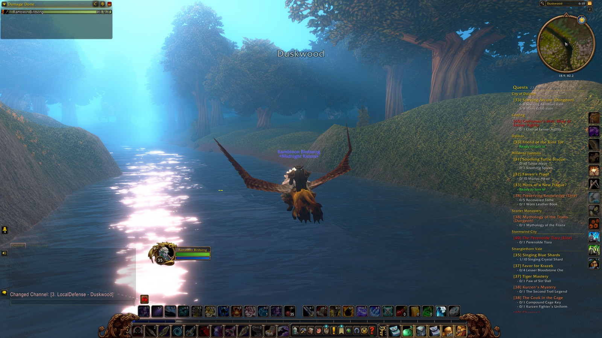
6:19 PM — Entered Duskwood
3h 35m in Azeroth tonight.
0 levels.
7 quests.
77 places.
42 enemies slain.
8 deaths.
19 travelling companions.
Ramble on.
7Quests
77Places
42Enemies slain
4Loot
8Deaths
19People
26,716XP
6Lines of roleplay
Quests
| Quest | Turned in at | Lv |
|---|
| Wetlands |
|---|
| The Thandol Span | Thandol Span | 35 |
| Arathi Highlands |
|---|
| Hints of a New Plague? ×4 | Go'Shek Farm | 35 |
| Northfold Manor | Refuge Pointe | 35 |
| Hillsbrad Foothills |
|---|
| Hints of a New Plague? | Southshore | 35 |
| Quest | Picked up at |
|---|
| Bring Back a Bang | Dun Modr |
| A Grim Task | Dun Modr |
| The Dark Iron War | Dun Modr |
| The Thandol Span | Thandol Span |
| The Battle for Arathi Basin! | Refuge Pointe |
| Fight for Warsong Gulch | Refuge Pointe |
| Worth Its Weight in Gold | Refuge Pointe |
| WANTED: Otto and Falconcrest | Refuge Pointe |
| WANTED: Marez Cowl | Refuge Pointe |
| Stromgarde Badges | Refuge Pointe |
| Quest | Picked up at | Since |
|---|
| Sathrah's Sacrifice | Temple of the Moon | Chapter 3 |
| Crown of the Earth | Dolanaar | Chapter 5 |
| The Forgotten Heirloom | The Jansen Stead | Chapter 8 |
| Save Techbot's Brain! | Tinker Town | Chapter 9 |
| The Day After | Tinker Town | Chapter 9 |
| Westfall Stew | Westfall | Chapter 11 |
| Lost in the Thicket Things | Menethil Harbor | Chapter 16 |
| Essential Artificials | Tinker Town | Chapter 16 |
| Data Rescue | Tinker Town | Chapter 17 |
| The Grand Betrayal | Tinker Town | Chapter 17 |
| Shared Fury | Forest Song | Chapter 19 |
| The Tower of Althalaxx | Darkshore | Chapter 19 |
| Horrors in the Highland | The Green Belt | Chapter 20 |
| Death to the Dragonmaw | Wetlands | Chapter 20 |
| Defeat Nek'rosh | Angerfang Encampment | Chapter 20 |
| Syndicate Assassins | Southshore Town Hall | Chapter 21 |
| Insane Druids | Forest Song | Chapter 22 |
| Talk of the Town | Southshore | Chapter 22 |
| Soothing Turtle Bisque | Southshore | Chapter 22 |
| The Color of Blood | Old Town | Chapter 22 |
| Slowing the Orc Advance | Silverwind Refuge | Chapter 25 |
| Crushridge Bounty | Southshore | Chapter 25 |
| An Alarming Request | Southshore Town Hall | Chapter 25 |
| Costly Menace | Southshore | Chapter 25 |
| Reclaimers' Business in Desolace | Hall of Explorers | Chapter 25 |
| Ironband Wants You! | The Library | Chapter 25 |
| Crashing the Wickerman Festival | Southshore | Chapter 28 |
| Stonegear's Search | Hall of Arms | Chapter 28 |
| Darkspear Islands Clash | Hall of Arms | Chapter 28 |
| Raptor Mastery | Nesingwary's Expedition | Chapter 31 |
| The Cook in the Cage | Kurzen's Compound | Chapter 31 |
| Kurzen's Mystery | Rebel Camp | Chapter 31 |
| Favor for Krazek | The Salty Sailor Tavern | Chapter 31 |
| Excelsior | Booty Bay | Chapter 32 |
| Shady Saltseers | The Salty Sailor Tavern | Chapter 32 |
| The Saltseer Captain | The Salty Sailor Tavern | Chapter 32 |
| Colonel Kurzen | Rebel Camp | Chapter 32 |
| Tiger Mastery | Nesingwary's Expedition | Chapter 33 |
| Panther Mastery | Nesingwary's Expedition | Chapter 33 |
| Zanzil's Secret | The Salty Sailor Tavern | Chapter 33 |
As far as Rambleon knows: a quest picked up before it was installed, or abandoned before it recorded that, is not here.
Scenes
10:20 PMA scene in Go'Shek Farm, alone
Rambleon Birdsong “thx”
10:31 PMOverheard in Refuge Pointe: Radix Uno and Keg Oflife
Radix Uno “lol”
Radix Uno “you just passed out, boom”
Keg Oflife “lol”
The Journey
330 moments, in order · fold
- 6:04 PM — Began the adventure
- 6:04 PM — Entered The Salty Sailor (Stranglethorn Vale)
- 6:05 PM — Entered The Salty Sailor Tavern (Stranglethorn Vale)
- 6:06 PM — Entered Booty Bay (Stranglethorn Vale)
- 6:06 PM — Entered The Salty Sailor Tavern (Stranglethorn Vale)
- 6:17 PM — Entered Booty Bay (Stranglethorn Vale)
- 6:17 PM — Entered The Salty Sailor Tavern (Stranglethorn Vale)
- 6:17 PM — Entered Booty Bay (Stranglethorn Vale)
- 6:17 PM — Flew from Booty Bay to Menethil Harbor, Wetlands
- 6:18 PM — Entered Janeiro's Point (Stranglethorn Vale)
- 6:18 PM — Entered Southern Savage Coast (Stranglethorn Vale)
- 6:18 PM — Entered Bloodsail Compound (Stranglethorn Vale)
- 6:18 PM — Entered Southern Savage Coast (Stranglethorn Vale)
- 6:19 PM — Entered The Vile Reef (Stranglethorn Vale)
- 6:19 PM — Entered The Savage Coast (Stranglethorn Vale)
- 6:19 PM — Entered Bal'lal Ruins (Stranglethorn Vale)
- 6:19 PM — Entered Stranglethorn Vale
- 6:19 PM — Entered Duskwood
- 6:20 PM — Entered The Hushed Bank (Duskwood)
- 6:20 PM — Entered The Darkened Bank (Duskwood)
- 6:20 PM — Entered Westfall
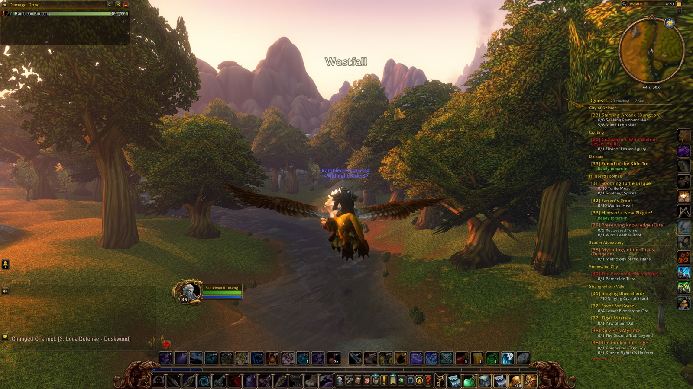
6:20 PM — Entered Westfall- 6:20 PM — Entered Forest's Edge (Elwynn Forest)
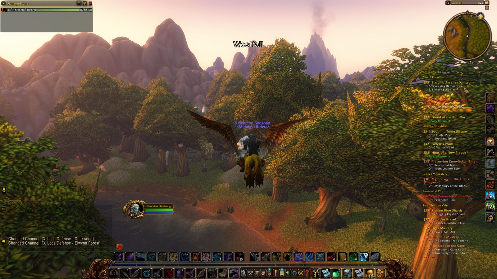
6:20 PM — Entered Elwynn Forest- 6:20 PM — Entered Westfall
- 6:20 PM — Entered Forest's Edge (Elwynn Forest)
- 6:21 PM — Entered Elwynn Forest
- 6:21 PM — Entered Mirror Lake Orchard (Elwynn Forest)
- 6:21 PM — Entered Mirror Lake (Elwynn Forest)
- 6:21 PM — Entered Elwynn Forest
- 6:21 PM — Entered Valley of Heroes (Stormwind City)
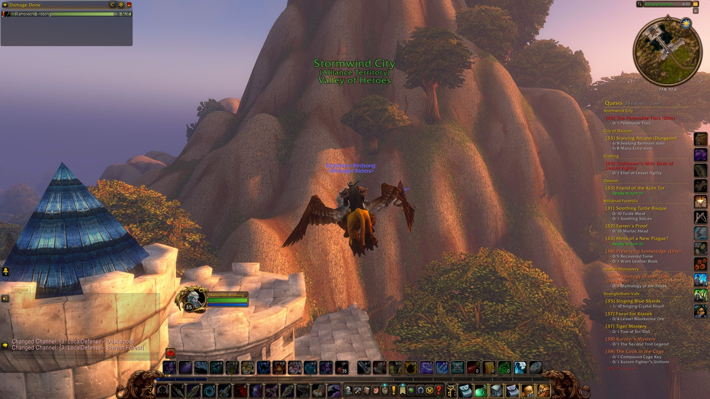
6:21 PM — Entered Stormwind City- 6:21 PM — Entered Elwynn Forest
- 6:21 PM — Entered Crystal Lake (Elwynn Forest)
- 6:21 PM — Entered Northshire Vineyards (Elwynn Forest)
- 6:22 PM — Entered Northshire Valley (Elwynn Forest)
- 6:22 PM — Entered Elwynn Forest
- 6:22 PM — Entered Burning Steppes
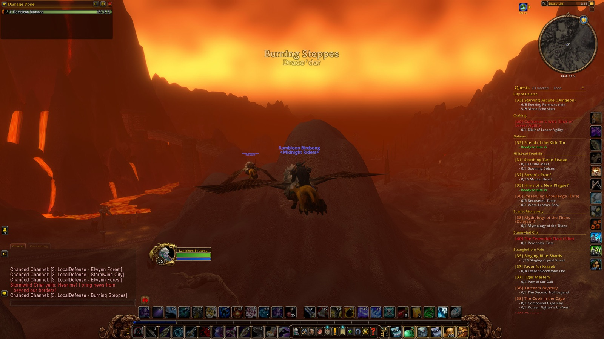
6:22 PM — Entered Burning Steppes- 6:22 PM — Entered Draco'dar (Burning Steppes)
- 6:22 PM — Entered Blackrock Mountain (Burning Steppes)
- 6:23 PM — Entered Burning Steppes
- 6:23 PM — Entered Blackrock Stronghold (Burning Steppes)
- 6:23 PM — Entered Burning Steppes
- 6:23 PM — Entered The Sea of Cinders (Searing Gorge)
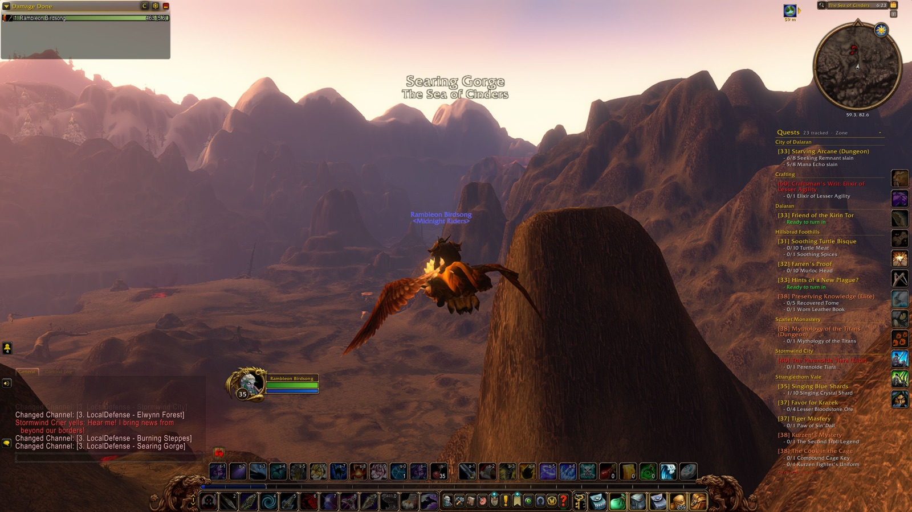
6:23 PM — Entered Searing Gorge- 6:23 PM — Entered The Cauldron (Searing Gorge)
- 6:23 PM — Entered Searing Gorge
- 6:23 PM — Entered Firewatch Ridge (Searing Gorge)
- 6:24 PM — Entered Searing Gorge
- 6:24 PM — Entered Dun Morogh
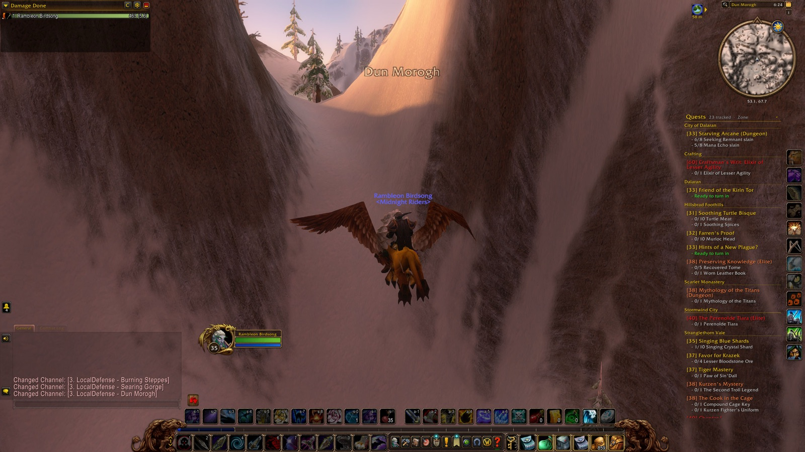
6:24 PM — Entered Dun Morogh- 6:24 PM — Entered The Tundrid Hills (Dun Morogh)
- 6:24 PM — Entered Dun Morogh
- 6:24 PM — Entered Kharanos (Dun Morogh)
- 6:24 PM — Entered Dun Morogh
- 6:25 PM — Entered Misty Pine Refuge (Dun Morogh)
- 6:25 PM — Entered Dun Morogh
- 6:25 PM — Entered Amberstill Ranch (Dun Morogh)
- 6:25 PM — Entered Dun Morogh
- 6:26 PM — Entered Wetlands
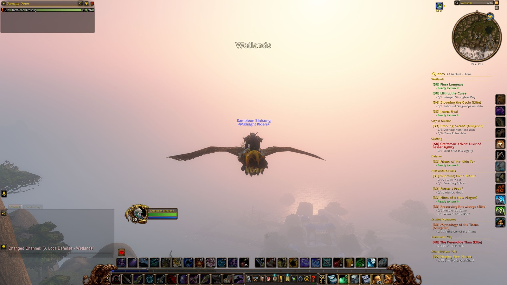
6:26 PM — Entered Wetlands- 6:26 PM — Entered Menethil Bay (Wetlands)
- 6:26 PM — Entered Menethil Harbor (Wetlands)
- 7:15 PM — Entered Menethil Harbor (Wetlands)
- 7:16 PM — Entered Deepwater Tavern (Wetlands)
- 7:16 PM — Entered Menethil Harbor (Wetlands)
- 7:17 PM — Entered Menethil Keep (Wetlands)
- 7:18 PM — Entered Menethil Harbor (Wetlands)
- 7:18 PM — Entered Menethil Bay (Wetlands)
- 7:18 PM — Entered Wetlands
- 7:19 PM — Entered Bluegill Marsh (Wetlands)
- 7:20 PM — Entered Sundown Marsh (Wetlands)
- 7:20 PM — Entered Wetlands
- 7:20 PM — Entered Sundown Marsh (Wetlands)
- 7:21 PM — Entered Wetlands
- 7:24 PM — Entered Dun Modr (Wetlands)
- 8:41 PM — Entered Dun Modr (Wetlands)
- 8:42 PM — Accepted "Bring Back a Bang"
- 8:42 PM — Accepted "The Thandol Span"
- 8:42 PM — Accepted "A Grim Task"
- 8:42 PM — Accepted "The Dark Iron War"
- 8:43 PM — Entered Thandol Span (Wetlands)
- 8:43 PM — Discovered Thandol Span
- 8:44 PM — Discovered Thandol Span
- 8:44 PM — Discovered Thandol Span
- 8:44 PM — Entered Thandol Span (Arathi Highlands)
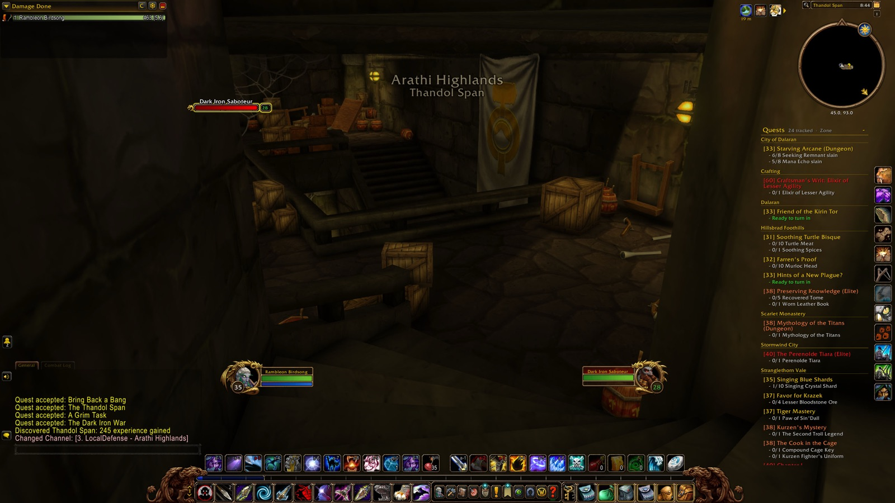
8:44 PM — Entered Arathi Highlands- 8:44 PM — Entered Thandol Span (Wetlands)
- 8:44 PM — Completed "The Thandol Span"
- 8:44 PM — Accepted "The Thandol Span"
- 8:44 PM — Report back to Rhag Garmason and show him the parchment you found on Rustlocke's corpse. — "The Thandol Span"
- 8:45 PM — Entered Thandol Span (Arathi Highlands)
- 8:46 PM — Discovered Arathi Highlands
- 8:46 PM — Entered Arathi Highlands
- 8:47 PM — First Plains Creeper slain
- 8:47 PM — First Highland Strider slain
- 8:50 PM — Entered Go'Shek Farm (Arathi Highlands)
- 8:50 PM — Discovered Go'Shek Farm
- 8:50 PM — Discovered Go'Shek Farm
- 8:51 PM — First Hammerfall Grunt slain
- 8:51 PM — Completed "Hints of a New Plague?"
- 8:51 PM — Accepted "Hints of a New Plague?"
- 8:52 PM — First Hammerfall Peon slain
- 8:54 PM — First Apothecary Jorell slain
- 9:00 PM — Abandoned "Bartolo's Yeti Fur Cloak"
- 9:01 PM — Entered Arathi Highlands
- 9:01 PM — Entered Go'Shek Farm (Arathi Highlands)
- 9:01 PM — Entered Arathi Highlands
- 9:02 PM — Discovered Refuge Pointe
- 9:02 PM — Discovered Refuge Pointe
- 9:02 PM — Entered Refuge Pointe (Arathi Highlands)
- 9:02 PM — Found the flight path at Refuge Pointe
- 9:03 PM — Accepted "The Battle for Arathi Basin!"
- 9:03 PM — Abandoned "Lifting the Curse"
- 9:03 PM — Abandoned "Friend of the Kirin Tor"
- 9:04 PM — Abandoned "Starving Arcane"
- 9:04 PM — Accepted "Fight for Warsong Gulch"
- 9:04 PM — Accepted "Northfold Manor"
- 9:05 PM — Accepted "Worth Its Weight in Gold"
- 9:05 PM — Abandoned "Craftsman's Writ: Elixir of Lesser Agility"
- 9:06 PM — Accepted "WANTED: Otto and Falconcrest"
- 9:06 PM — Abandoned "Fiora Longears"
- 9:06 PM — Accepted "WANTED: Marez Cowl"
- 9:10 PM — Entered Arathi Basin
- 9:10 PM — Discovered Trollbane Hall
- 9:10 PM — Joined forces with Michaelsoft (Shaman)
- 9:10 PM — Joined forces with Janqqar (Priest)
- 9:10 PM — Joined forces with Elvya (Druid)
- 9:10 PM — Joined forces with Jumbo (Shaman)
- 9:10 PM — Joined forces with Doomnoomthe (Druid)
- 9:10 PM — Entered Trollbane Hall (Arathi Basin)
- 9:10 PM — Joined forces with Trill (Hunter)
- 9:10 PM — Joined forces with Ko (Druid)
- 9:10 PM — Joined forces with Maibus (Mage)
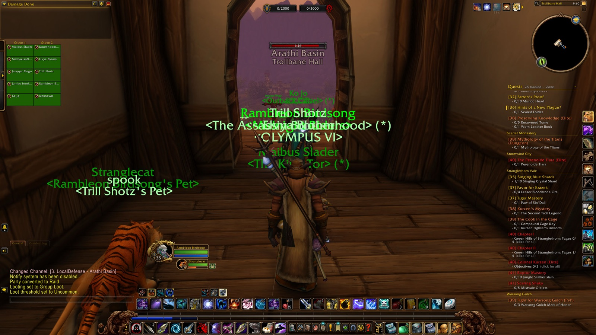
9:10 PM — Entered Arathi Basin- 9:10 PM — Joined forces with Káteros (Rogue)
- 9:10 PM — Joined forces with Illithor (Priest)
- 9:10 PM — Joined forces with Craven (Warlock)
- 9:10 PM — Joined forces with Thranduil (Druid)
- 9:11 PM — Joined forces with Mikeadin (Paladin)
- 9:11 PM — Joined forces with Mhalice (Paladin)
- 9:12 PM — Discovered Arathi Basin
- 9:12 PM — Entered Arathi Basin
- 9:12 PM — Discovered Stables
- 9:12 PM — Entered Stables (Arathi Basin)
- 9:12 PM — Entered Arathi Basin
- 9:13 PM — Discovered Lumber Mill
- 9:13 PM — Entered Lumber Mill (Arathi Basin)
- 9:14 PM — Entered Arathi Basin
- 9:14 PM — Entered Blacksmith (Arathi Basin)
- 9:14 PM — Discovered Blacksmith
- 9:16 PM — Killed by another player in Blacksmith
- 9:16 PM — Entered Stables (Arathi Basin)
- 9:16 PM — Entered Arathi Basin
- 9:16 PM — Entered Blacksmith (Arathi Basin)
- 9:16 PM — Back among the living
- 9:17 PM — Entered Arathi Basin
- 9:17 PM — Entered Lumber Mill (Arathi Basin)
- 9:18 PM — Killed by another player in Lumber Mill
- 9:18 PM — Entered Blacksmith (Arathi Basin)
- 9:18 PM — Entered Arathi Basin
- 9:18 PM — Entered Lumber Mill (Arathi Basin)
- 9:18 PM — Entered Arathi Basin
- 9:18 PM — Entered Lumber Mill (Arathi Basin)
- 9:19 PM — Back among the living
- 9:19 PM — Killed by another player in Lumber Mill
- 9:19 PM — Entered Blacksmith (Arathi Basin)
- 9:19 PM — Entered Arathi Basin
- 9:19 PM — Entered Lumber Mill (Arathi Basin)
- 9:19 PM — 1/1 Lumber Mill Assaulted — "The Battle for Arathi Basin!"
- 9:19 PM — Back among the living
- 9:20 PM — Killed by another player in Lumber Mill
- 9:20 PM — Entered Stables (Arathi Basin)
- 9:20 PM — Entered Arathi Basin
- 9:20 PM — Entered Lumber Mill (Arathi Basin)
- 9:21 PM — Back among the living
- 9:21 PM — Entered Arathi Basin
- 9:21 PM — Entered Blacksmith (Arathi Basin)
- 9:23 PM — Killed by another player in Blacksmith
- 9:24 PM — Back among the living
- 9:25 PM — Killed by another player in Blacksmith
- 9:26 PM — Back among the living
- 9:28 PM — Killed by another player in Blacksmith
- 9:28 PM — Entered Gold Mine (Arathi Basin)
- 9:28 PM — Entered Arathi Basin
- 9:28 PM — Entered Gold Mine (Arathi Basin)
- 9:29 PM — Entered Arathi Basin
- 9:29 PM — Entered Gold Mine (Arathi Basin)
- 9:29 PM — Entered Riverglades (Farholde Iron Mine)
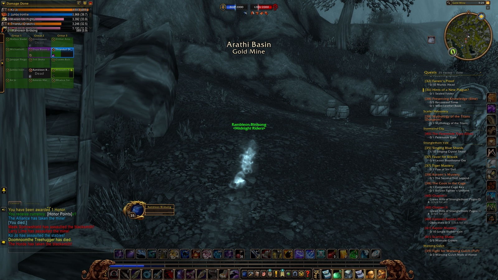
9:29 PM — Entered Farholde Iron Mine- 9:29 PM — Entered Gold Mine (Arathi Basin)
- 9:29 PM — Entered Arathi Basin
- 9:30 PM — 1/1 Blacksmith Assaulted — "The Battle for Arathi Basin!"
- 9:30 PM — Entered Blacksmith (Arathi Basin)
- 9:31 PM — Entered Arathi Basin
- 9:31 PM — Entered Lumber Mill (Arathi Basin)
- 9:31 PM — Entered Arathi Basin
- 9:32 PM — Entered Lumber Mill (Arathi Basin)
- 9:32 PM — Entered Arathi Basin
- 9:32 PM — Entered Blacksmith (Arathi Basin)
- 9:33 PM — Looted Arathi Basin Mark of Honor (Uncommon)
- 9:33 PM — Parted ways with Káteros
- 9:33 PM — Parted ways with Maibus
- 9:33 PM — Parted ways with Michaelsoft
- 9:33 PM — Parted ways with Janqqar
- 9:33 PM — Parted ways with Jumbo
- 9:33 PM — Parted ways with Mikeadin
- 9:33 PM — Parted ways with Doomnoomthe
- 9:33 PM — Parted ways with Craven
- 9:33 PM — Parted ways with Illithor
- 9:33 PM — Parted ways with Elvya
- 9:33 PM — Parted ways with Ko
- 9:34 PM — Parted ways with Mhalice
- 9:34 PM — Parted ways with Thranduil
- 9:34 PM — Parted ways with Trill
- 9:35 PM — Left Arathi Basin
- 9:35 PM — Entered Refuge Pointe (Arathi Highlands)
- 9:38 PM — Entered Arathi Highlands
- 9:38 PM — Discovered Boulder'gor
- 9:38 PM — Discovered Boulder'gor
- 9:38 PM — Entered Boulder'gor (Arathi Highlands)
- 9:39 PM — First Boulderfist Ogre slain
- 9:41 PM — Entered Arathi Highlands
- 9:41 PM — Entered Northfold Manor (Arathi Highlands)
- 9:41 PM — Discovered Northfold Manor
- 9:41 PM — Discovered Northfold Manor
- 9:42 PM — First Syndicate Highwayman slain
- 9:42 PM — Looted Glimmering Mail Pauldrons (Uncommon)
- 9:50 PM — Looted Plans: Shadow Crescent Axe (Uncommon)
- 9:57 PM — 10/10 Syndicate Highwayman slain — "Northfold Manor"
- 9:58 PM — First Syndicate Mercenary slain
- 10:00 PM — Joined forces with Poten (Warrior)
- 10:00 PM — Joined forces with Righteous (Paladin)
- 10:00 PM — Joined forces with Mad (Druid)
- 10:00 PM — Joined forces with Lyrian (Druid)
- 10:00 PM — Parted ways with Righteous
- 10:01 PM — First Syndicate Pathstalker slain
- 10:02 PM — 6/6 Syndicate Mercenary slain — "Northfold Manor"
- 10:03 PM — Parted ways with Poten
- 10:03 PM — Parted ways with Lyrian
- 10:03 PM — Parted ways with Mad
- 10:03 PM — Entered Arathi Highlands
- 10:03 PM — Entered Boulder'gor (Arathi Highlands)
- 10:04 PM — Entered Arathi Highlands
- 10:04 PM — Entered Refuge Pointe (Arathi Highlands)
- 10:04 PM — Completed "Northfold Manor"
- 10:05 PM — Accepted "Stromgarde Badges"
- 10:06 PM — Entered Arathi Highlands
- 10:09 PM — First Giant Plains Creeper slain
- 10:10 PM — Entered Go'Shek Farm (Arathi Highlands)
- 10:10 PM — Joined forces with Bunny (Rogue)
- 10:19 PM — First Forsaken Courier slain
- 10:20 PM — Slain by Forsaken Courier in Go'Shek Farm
- 10:20 PM — Entered Arathi Highlands
- 10:20 PM — Back among the living
- 10:20 PM — Entered Go'Shek Farm (Arathi Highlands)
- 10:20 PM — 1/1 Sealed Folder — "Hints of a New Plague?"
- 10:20 PM — A scene in Go'Shek Farm, alone (1 line)
- 10:21 PM — Parted ways with Bunny
- 10:21 PM — Completed "Hints of a New Plague?"
- 10:21 PM — Accepted "Hints of a New Plague?"
- 10:22 PM — Completed "Hints of a New Plague?"
- 10:22 PM — Accepted "Hints of a New Plague?"
- 10:28 PM — Completed "Hints of a New Plague?"
- 10:28 PM — Accepted "Hints of a New Plague?"
- 10:28 PM — Entered Arathi Highlands
- 10:29 PM — Discovered Circle of Outer Binding
- 10:29 PM — Discovered Circle of Outer Binding
- 10:29 PM — Entered Circle of Outer Binding (Arathi Highlands)
- 10:29 PM — Entered Arathi Highlands
- 10:29 PM — Entered Circle of Outer Binding (Arathi Highlands)
- 10:29 PM — Entered Arathi Highlands
- 10:29 PM — Entered Refuge Pointe (Arathi Highlands)
- 10:29 PM — Entered Arathi Highlands
- 10:30 PM — Entered Boulder'gor (Arathi Highlands)
- 10:30 PM — Entered Arathi Highlands
- 10:30 PM — Entered Refuge Pointe (Arathi Highlands)
- 10:31 PM — Overheard in Refuge Pointe: Radix Uno and Keg Oflife (3 lines)
- 10:31 PM — Flew from Refuge Pointe to Southshore, Hillsbrad
- 10:31 PM — Entered Arathi Highlands
- 10:31 PM — Entered Northfold Manor (Arathi Highlands)
- 10:31 PM — Entered Arathi Highlands
- 10:32 PM — Entered Thoradin's Wall (Arathi Highlands)
- 10:32 PM — Entered Thoradin's Wall (Hillsbrad Foothills)
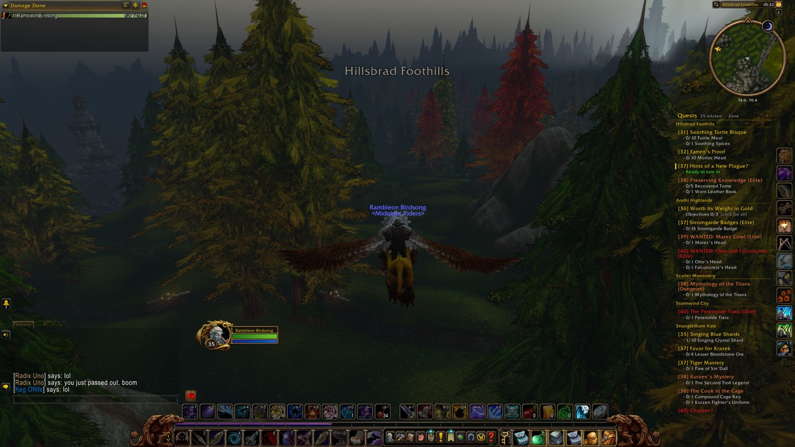
10:32 PM — Entered Hillsbrad Foothills- 10:32 PM — Entered Hillsbrad Foothills
- 10:32 PM — Entered Dun Garok (Hillsbrad Foothills)
- 10:32 PM — Entered Nethander Stead (Hillsbrad Foothills)
- 10:32 PM — Entered Eastern Strand (Hillsbrad Foothills)
- 10:32 PM — Entered Southshore (Hillsbrad Foothills)
- 10:33 PM — Looted Lightstep Leggings (Uncommon)
- 10:33 PM — Completed "Hints of a New Plague?"
- 10:49 PM — Flew from Southshore to Refuge Pointe, Arathi
- 10:49 PM — Entered Hillsbrad Foothills
- 10:49 PM — Entered Nethander Stead (Hillsbrad Foothills)
- 10:49 PM — Entered Hillsbrad Foothills
- 10:49 PM — Entered Thoradin's Wall (Hillsbrad Foothills)
- 10:49 PM — Entered Arathi Highlands
- 10:50 PM — Entered Refuge Pointe (Arathi Highlands)
- 11:09 PM — Flew from Refuge Pointe to Ironforge, Dun Morogh
- 11:09 PM — Entered Circle of Outer Binding (Arathi Highlands)
- 11:09 PM — Entered Arathi Highlands
- 11:10 PM — Entered Thandol Span (Arathi Highlands)
- 11:10 PM — Entered Thandol Span (Wetlands)
- 11:10 PM — Entered Dun Modr (Wetlands)
- 11:10 PM — Entered Wetlands
- 11:10 PM — Entered The Green Belt (Wetlands)
- 11:10 PM — Entered Wetlands
- 11:11 PM — Entered Mosshide Fen (Wetlands)
- 11:11 PM — Entered Wetlands
- 11:11 PM — Entered Stonewrought Dam (Loch Modan)
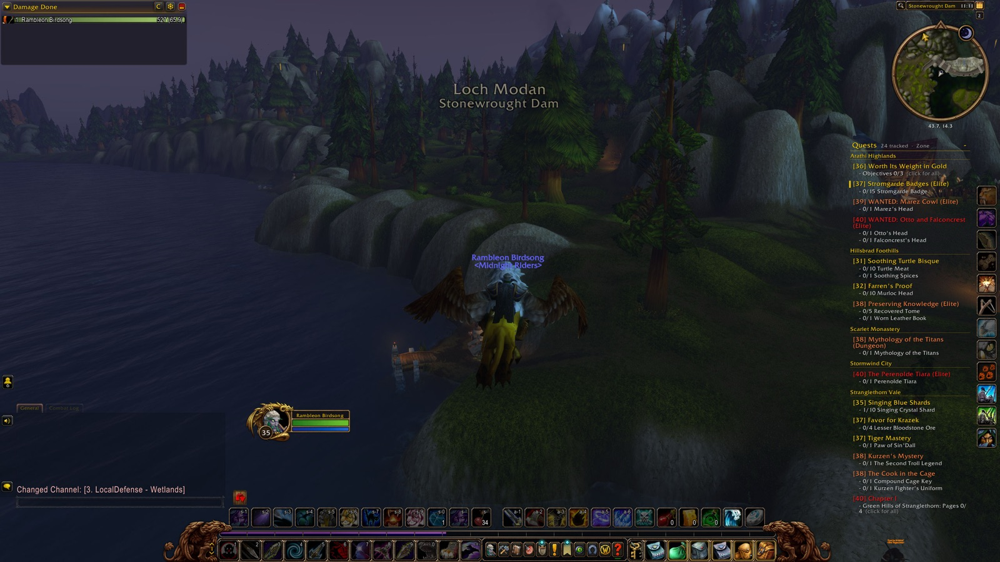
11:11 PM — Entered Loch Modan- 11:11 PM — Entered Silver Stream Mine (Loch Modan)
- 11:12 PM — Entered Algaz Station (Loch Modan)
- 11:12 PM — Entered North Gate Pass (Loch Modan)
- 11:12 PM — Entered Loch Modan
- 11:12 PM — Entered North Gate Outpost (Dun Morogh)
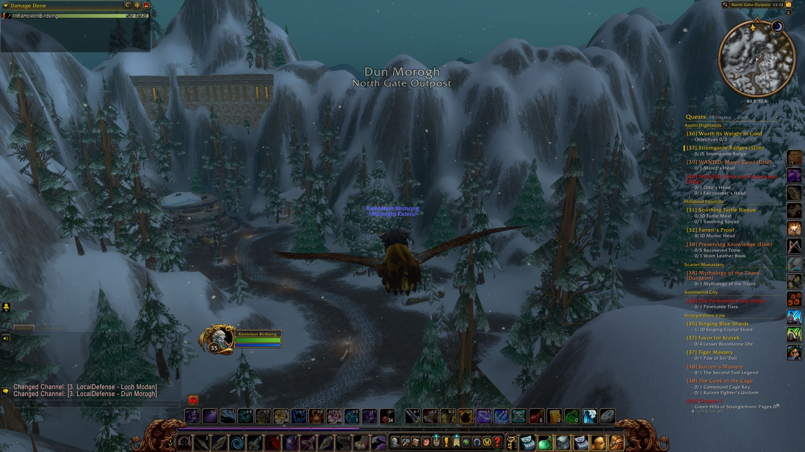
11:12 PM — Entered Dun Morogh- 11:12 PM — Entered North Gate Pass (Dun Morogh)
- 11:12 PM — Entered Dun Morogh
- 11:13 PM — Entered Amberstill Ranch (Dun Morogh)
- 11:13 PM — Entered Dun Morogh
- 11:13 PM — Entered Misty Pine Refuge (Dun Morogh)
- 11:13 PM — Entered Dun Morogh
- 11:13 PM — Entered Gates of Ironforge (Dun Morogh)
- 11:13 PM — Entered Ironforge
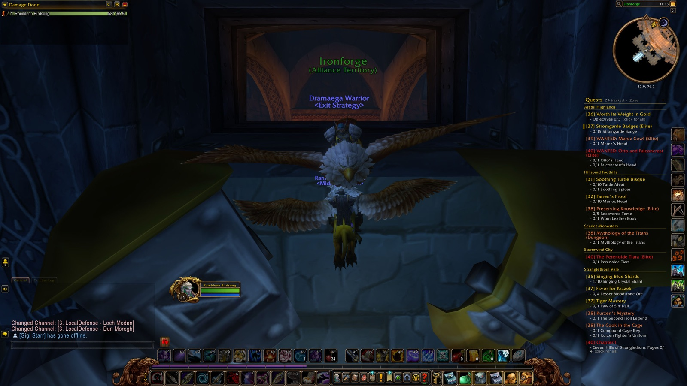
11:13 PM — Entered Ironforge- 11:13 PM — Entered The Great Forge (Ironforge)